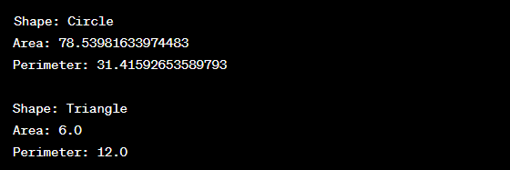

Write a Java program to create an abstract class Shape with abstract methods calculateArea() and calculatePerimeter(). Create subclasses Circle and Triangle that extend the Shape class and implement the respective methods to calculate the area and perimeter of each shape.
Code:-
abstract class Shape {
// Abstract methods to be implemented by subclasses
public abstract double calculateArea();
public abstract double calculatePerimeter();
}
class Circle extends Shape {
private double radius;
// Constructor for Circle
public Circle(double radius) {
this.radius = radius;
}
@Override
public double calculateArea() {
return Math.PI * radius * radius;
}
@Override
public double calculatePerimeter() {
return 2 * Math.PI * radius;
}
}
class Triangle extends Shape {
private double side1;
private double side2;
private double side3;
// Constructor for Triangle
public Triangle(double side1, double side2, double side3) {
this.side1 = side1;
this.side2 = side2;
this.side3 = side3;
}
@Override
public double calculateArea() {
// Using Heron's formula to calculate the area of a triangle
double s = (side1 + side2 + side3) / 2;
return Math.sqrt(s * (s - side1) * (s - side2) * (s - side3));
}
@Override
public double calculatePerimeter() {
return side1 + side2 + side3;
}
}
public class ShapeExample {
public static void main(String[] args) {
// Creating objects of Circle and Triangle
Circle circle = new Circle(5.0);
Triangle triangle = new Triangle(3.0, 4.0, 5.0);
// Displaying information about the shapes
displayShapeInfo(circle);
displayShapeInfo(triangle);
}
// Helper method to display information about a shape
private static void displayShapeInfo(Shape shape) {
System.out.println("Shape: " + shape.getClass().getSimpleName());
System.out.println("Area: " + shape.calculateArea());
System.out.println("Perimeter: " + shape.calculatePerimeter());
System.out.println();
}
}
Output:-
